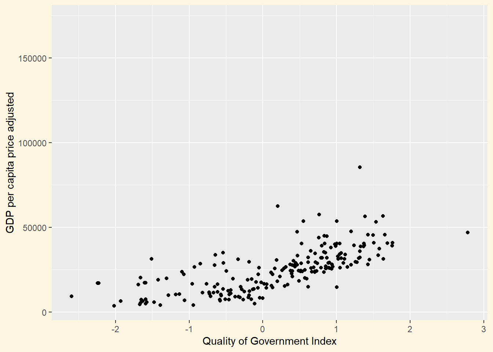
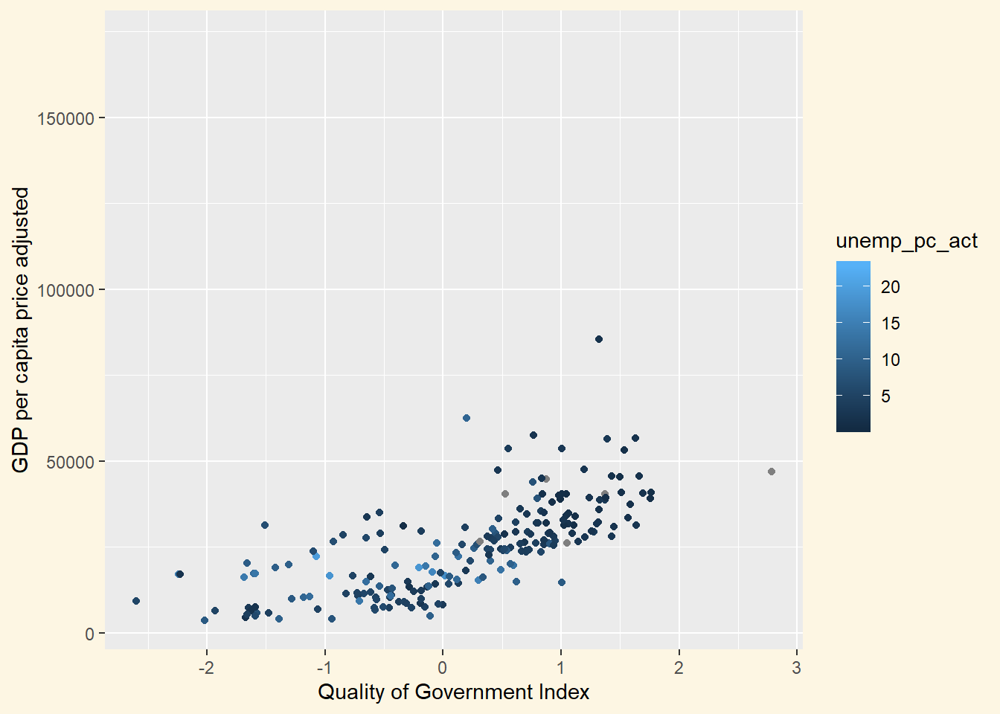
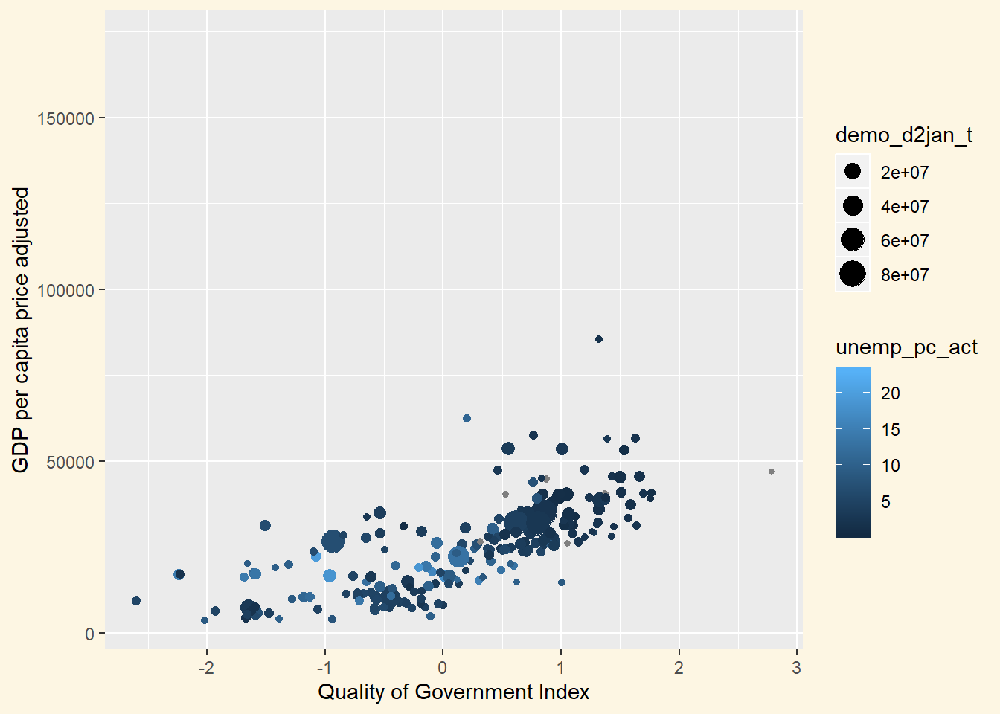
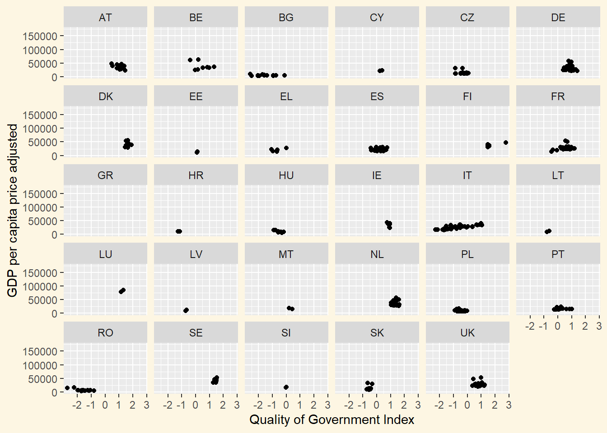
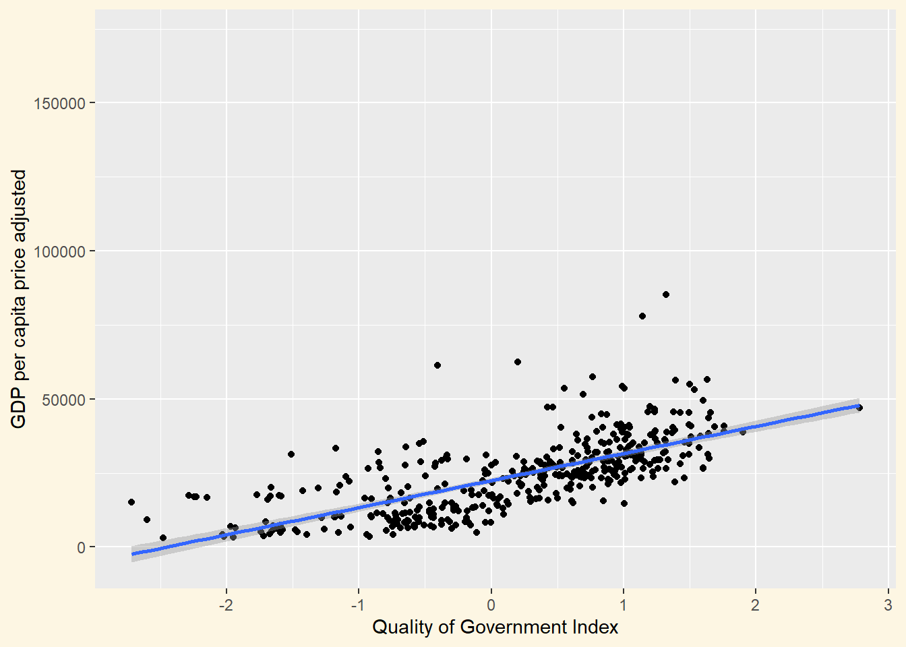
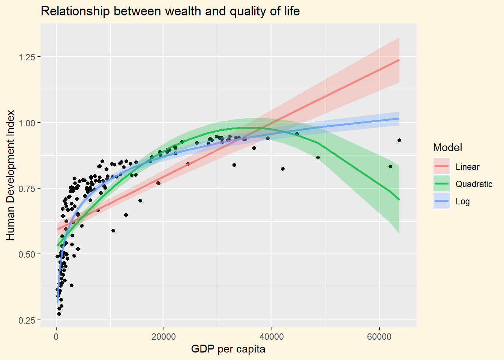
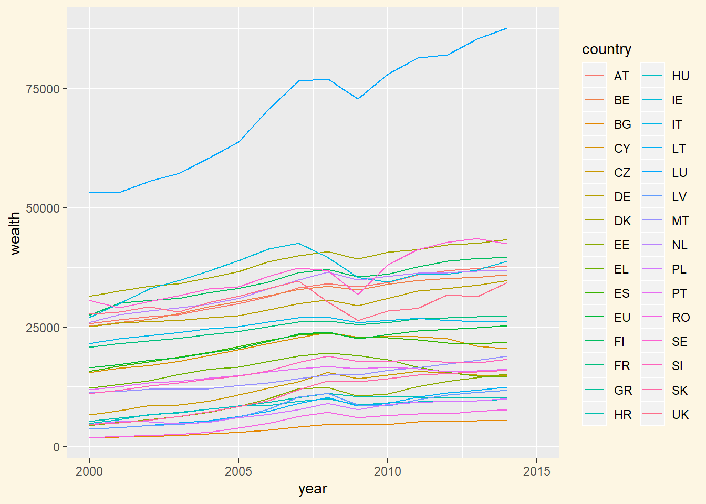
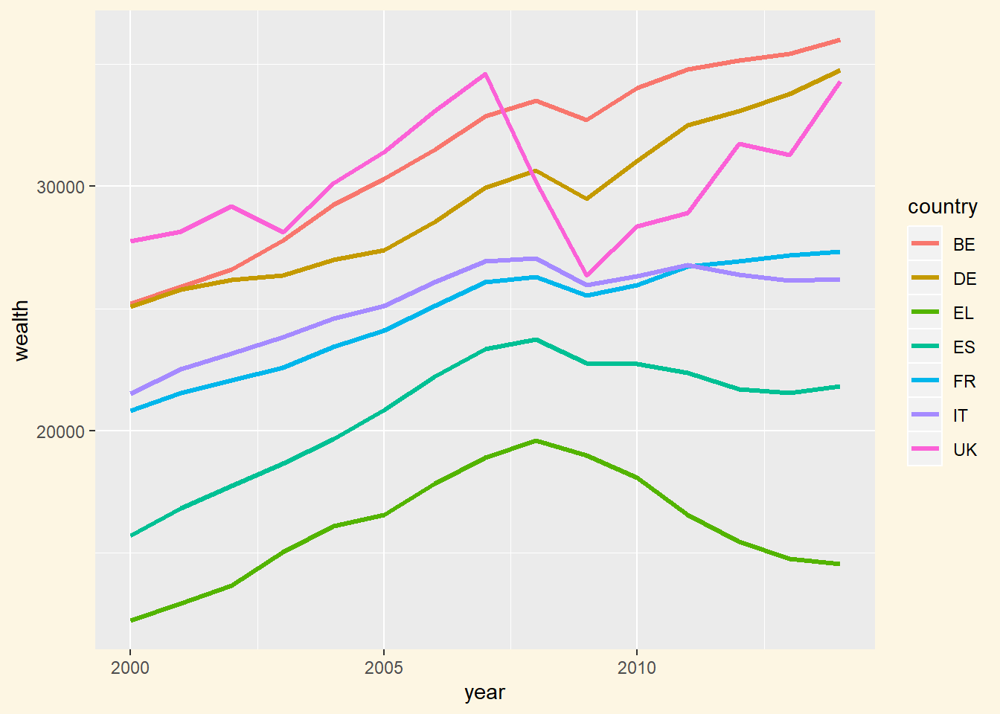

Chapter 2 Tidyverse introduction
2.1 Seminar
2.1.1 Introduction to the tidyverse
The tidyverse package makes it easier to pre-process data. The package attempts to make it easier to apply operations that would otherwise require a substantial amount of coding. The syntax of the tidyverse is meant to be more intuitive than base R syntax but that also means that you have to learn new syntax. Working with the tidyverse is a matter of taste. A great resource for learning tidyverse and R is the book R for data science which is freely available.
Before getting started, we first need to install the tidyverse package like so: install.packages("tidyverse"). You only need to install once. However, doing this again is not a mistake. In fact, R, RStudio and R packages are regularly updated. It is good practice to update all of these on your computer as well. Just remember never to update before a deadline!
# clear workspace
rm(list = ls())
# load tidyverse package
library(tidyverse)-- Attaching packages ---------- tidyverse 1.2.1 --v ggplot2 3.2.1 v purrr 0.3.2
v tibble 2.1.3 v dplyr 0.8.3
v tidyr 1.0.0 v stringr 1.4.0
v readr 1.3.1 v forcats 0.4.0-- Conflicts ------------- tidyverse_conflicts() --
x dplyr::filter() masks stats::filter()
x dplyr::lag() masks stats::lag()Let’s check whether we have updates available by runinng tidyverse_update()
# check for available updates
tidyverse_update()The following packages are out of date:
* httr (1.4.0 -> 1.4.1)
* modelr (0.1.4 -> 0.1.5)
* tidyr (0.8.3 -> 1.0.0)
* xml2 (1.2.0 -> 1.2.2)
Start a clean R session then run:
install.packages(c("httr", "modelr", "tidyr", "xml2"))R tells us that several packages are in indeed out of data (this may be different on your computer - it’s possible that everything is up to date on your machine). Below, we update according to the console message.
install.packages(c("httr", "modelr", "tidyr", "xml2"))
tidyverse_update()All tidyverse packages up-to-dateNow, everything is updated correctly.
Let’s re-load the EU data set that we used previously.
eu <- read.csv("qog_eureg_long_sep16.csv", stringsAsFactors = FALSE)2.1.2 Data visualization with ggplot2
In the previous exercise, we stopped on data illustration. Base R graphics is very powerful and you can do almost anything with it. However, it does require to write a lot of code. ggplot2 is useful because it helps us to produce good looking graphics with relative ease.
Let’s create a simple scatter plot. We use the wealth variable econ_2gdp_eur_hab and the European Quality of Government Index (EQI) — variable name eqi_eqi — to assess whether the two are related but only for post 2010.
ggplot(data = eu[eu$year >2010,]) +
geom_point(mapping = aes( x = eqi_eqi, y = econ_2gdp_eur_hab)) +
labs(x = "Quality of Government Index", y = "GDP per capita price adjusted")Warning: Removed 2464 rows containing missing values (geom_point).
The plot looks a bit better than what we produced with base R. We also spot a slightly positive relationship. Let’s walk trough the code. First, we type ggplot() which creates the coordinate system which we then add layers to. The argument that we supply to ggplot() is the data we are using. The code ggplot(data = eu) creates an empty plot. We then add the points or observations to the plot with the function geom_point(). The argument mapping is necessary for ggplot to decide how variables are mapped to visuals. mapping is always paired with aes() as well as the x and y arguments which just like in base R’s plot() function correspond to the axes. Recall that it is convention to place the independent variable on the x axis and the dependent variable on the y axis.
Let’s add a third variable to the plot. Here, we use labor market statistics. The variable unemp_pc_act measures long-term unemployment as percentage of the active population. We use the variable for the color argument.
ggplot(data = eu[eu$year >2010, ]) +
geom_point(mapping = aes( x = eqi_eqi, y = econ_2gdp_eur_hab,
color = unemp_pc_act) ) +
labs(x = "Quality of Government Index", y = "GDP per capita price adjusted")Warning: Removed 2464 rows containing missing values (geom_point).
The lighter shading corresponds to more unemployment. Using unemployment does not shed a lot of light on the relationship between the variables. It does seem like places with more unemployment cluster at the lower end of the governance index and they correspond with less per capita wealth which is to be expected.
Instead of using a third variable on color, we could use it on the size of the points. For instance, population size is often applied here, making larger units more prominent. Let’s use the total population variable for the size of the points.
ggplot(data = eu[eu$year >2010, ]) +
geom_point(mapping = aes( x = eqi_eqi, y = econ_2gdp_eur_hab, color = unemp_pc_act,
size = demo_d2jan_t) ) +
labs(x = "Quality of Government Index", y = "GDP per capita price adjusted")Warning: Removed 2464 rows containing missing values (geom_point).
Let’s evaluate whether the relationship between the governance index and wealth holds within countries. We can use facets to create multiple plots where the splots are split by a variable like, for instance, country.
ggplot(data = eu) +
geom_point(mapping = aes( x = eqi_eqi, y = econ_2gdp_eur_hab)) +
facet_wrap(~ NUTS0, nrow = 5)Warning: Removed 13469 rows containing missing values (geom_point).
The variable to split the plot by should be discrete rather than continuous. It is diffcult to see much on facet plots, when the splitting variable has many categories as in this case. We see, however that especially in Italy there are large differences beteween the quality of governance.
In our initial plot, we were interested in the relationship between governance and the wealth. Let’s add a linear regression line including the confidence interval to the plot.
ggplot(eu, aes(x = eqi_eqi, y = econ_2gdp_eur_hab)) +
geom_point() +
geom_smooth(method = lm) +
labs(x = "Quality of Government Index", y = "GDP per capita price adjusted")Warning: Removed 13469 rows containing non-finite values (stat_smooth).Warning: Removed 13469 rows containing missing values (geom_point).
This was useful. Let’s say we have a more complex model. To illustrate this, we quickly load the world.data data set.
world.data <- read.csv("QoG2012.csv")Now, we regress quality of life measured by the United Nations Human Development Index on wealth measured as GDP per capita. We fit one linear model, one quadratic model and one log transformed model. We then make predictions including confidence intervals and add them to the data set. We then plot the results using ggplot.
We need some additional data manipulation skills which we will cover as we go along. Specifically, we select a subset of the data set and we reshape the data set into long format.
# drop missings
world.data <- world.data[ !is.na(world.data$wdi_gdpc) & !is.na(world.data$undp_hdi), ]
# run regressions
m1 <- glm(undp_hdi ~ wdi_gdpc, data = world.data, family = "gaussian")
m2 <- glm(undp_hdi ~ poly(wdi_gdpc,2), data = world.data, family = "gaussian")
m3 <- glm(undp_hdi ~ log(wdi_gdpc), data = world.data, family = "gaussian")
# make predictions
preds1 <- predict(m1, se.fit = TRUE)
preds2 <- predict(m2, se.fit = TRUE)
preds3 <- predict(m3, se.fit = TRUE)
## add point estimates and CIs to the world.data data set
# model 1
world.data$bestguess1 <- preds1$fit
world.data$lowerbound1 <- preds1$fit - 1.96 * preds1$se.fit
world.data$upperbound1 <- preds1$fit + 1.96 * preds1$se.fit
# model 2
world.data$bestguess2 <- preds2$fit
world.data$lowerbound2 <- preds2$fit - 1.96 * preds2$se.fit
world.data$upperbound2 <- preds2$fit + 1.96 * preds2$se.fit
# model 3
world.data$bestguess3 <- preds3$fit
world.data$lowerbound3 <- preds3$fit - 1.96 * preds3$se.fit
world.data$upperbound3 <- preds3$fit + 1.96 * preds3$se.fit
# selecting a subset of variables
plot.data <- select(world.data,
"undp_hdi",
"wdi_gdpc",
"bestguess1","lowerbound1","upperbound1",
"bestguess2","lowerbound2","upperbound2",
"bestguess3","lowerbound3","upperbound3")
# reshaping the data set
plot.data <- reshape(plot.data, direction = "long",
varying = c("bestguess1","lowerbound1","upperbound1",
"bestguess2","lowerbound2","upperbound2",
"bestguess3","lowerbound3","upperbound3"),
timevar = "Model",
times = c("1","2","3"),
v.names = c("bestguess","lowerbound","upperbound"),
idvar = c("undp_hdi","wdi_gdpc"))
# renaming the rownames of the data set
row.names(plot.data) <- seq(1:nrow(plot.data))
# changing the grouping id into a factor
plot.data$Model <- factor(plot.data$Model, levels = c(1,2,3), labels = c("Linear", "Quadratic", "Log"))
ggplot(plot.data, aes(x = wdi_gdpc, y = undp_hdi)) +
geom_point(alpha = 0.6, color = "black") +
geom_line( aes( y = bestguess, color = Model), size = 1, alpha = 0.8) +
geom_ribbon( aes( ymin = lowerbound, ymax = upperbound, fill = Model), alpha = 0.25 ) +
labs( x = "GDP per capita", y = "Human Development Index",
title = "Relationship between wealth and quality of life")
2.1.3 Renaming variables and selecting subsets
You may remember that renaming variables involved sub-setting and the logical evaluations. Well, this is one of the things that is quite easy to do in tidyverse. Here, we use the rename() function from the dplyr package.
Let’s go back to the eu data set and rename the following variables:
NUTS0intocountryregion_nameintoregionecon_2gdp_eur_habintowealtheqi_eqiintoquality.of.government
eu.renamed <- rename(eu,
country = NUTS0,
region = region_name,
wealth = econ_2gdp_eur_hab,
quality.of.government = eqi_eqi)Selecting a subset is as easy as renaming. The function select() lets us do this easily.
eu.renamed <- select(eu.renamed,
country, region, wealth, quality.of.government)
names(eu.renamed)[1] "country" "region" "wealth"
[4] "quality.of.government"Let’s remove our small data set eu.renamed.
rm(eu.renamed)We can rename and select in one step within the select() function.
eu <- select(eu,
country = NUTS0,
region = region_name,
year,
wealth = econ_2gdp_eur_hab,
quality.of.government = eqi_eqi)
summary(eu) country region year wealth
Length:13884 Length:13884 Min. :1990 Min. : 1300
Class :character Class :character 1st Qu.:1996 1st Qu.: 14600
Mode :character Mode :character Median :2002 Median : 23800
Mean :2002 Mean : 23450
3rd Qu.:2009 3rd Qu.: 30000
Max. :2015 Max. :172600
NA's :7896
quality.of.government
Min. :-2.719
1st Qu.:-0.534
Median : 0.368
Mean : 0.184
3rd Qu.: 0.963
Max. : 2.781
NA's :13453 2.1.4 Aggregating and pipes
Our data set is on the region-year level. We want to compare countries over time. Therefore, we now aggregate our data up to the country-year level. Note that you want data in the most dis-aggregated fashion possible because aggregating to the next higher level is easy. We want to average over the regions within each country and year.
To do this we introduce two new functions and one new concept. The new concept is called the pipe and its operator is %>%. In our example we say first create a copy of the data set called eu called eu.country.year. We do not stop here but we continue on indicated by the pipe operator %>%. We then group the data set by two variables with the group_by() function. The first variable that indentifies groups is the country and the second is the year. We then contiue on with the pipe operator %>% and finally we summarize the data within the groups using the summarize() function.
eu.country.year <- eu %>%
group_by(country, year) %>%
summarize(wealth = mean(wealth, na.rm = TRUE),
quality.of.government = mean(quality.of.government, na.rm = TRUE))
head(eu.country.year, n = 15)# A tibble: 15 x 4
# Groups: country [1]
country year wealth quality.of.government
<chr> <int> <dbl> <dbl>
1 AT 1990 NaN NaN
2 AT 1991 NaN NaN
3 AT 1992 NaN NaN
4 AT 1993 NaN NaN
5 AT 1994 NaN NaN
6 AT 1995 NaN NaN
7 AT 1996 NaN NaN
8 AT 1997 NaN NaN
9 AT 1998 NaN NaN
10 AT 1999 NaN NaN
11 AT 2000 25738. NaN
12 AT 2001 26477. NaN
13 AT 2002 27138. NaN
14 AT 2003 27623. NaN
15 AT 2004 28746. NaNIt turns out that we have a lot of missing data in our dataset. Our goal is to plot wealth over time. We have all the necessary parts to do this but we would like to also add an EU average. In other words, for each year we need to create a new observation that receives the value EU for the country variable and the average of wealth within that year and the average of quality of government within that year. We follow the same procedure as previosly.
eu.year <- eu.country.year %>%
group_by(year) %>%
summarize(wealth = mean(wealth, na.rm = TRUE),
quality.of.government = mean(quality.of.government, na.rm = TRUE))We now have two datasets which need to combine.
2.1.5 Merging data sets
We cannot just paste the data sets together because they differ in the number of columns. As a first step, we need to create a new variable in the data set eu.year called country which identifies the country in that data set.
eu.year$country <- "EU"
eu.year# A tibble: 26 x 4
year wealth quality.of.government country
<int> <dbl> <dbl> <chr>
1 1990 NaN NaN EU
2 1991 NaN NaN EU
3 1992 NaN NaN EU
4 1993 NaN NaN EU
5 1994 NaN NaN EU
6 1995 NaN NaN EU
7 1996 NaN NaN EU
8 1997 NaN NaN EU
9 1998 NaN NaN EU
10 1999 NaN NaN EU
# ... with 16 more rowsWe now merge the two variables together. Recall that observations are uniquely identified by the variables country and year. We neeed to order the observations in both data sets before merging. To do this we use the arrange() function from the dplyr package. The datasets are already ordered by the country first and the year second. Let’s reorder by year first and then country to illustrate how the function works.
eu.country.year <- arrange(eu.country.year, year, country)
eu.year <- arrange(eu.year, year, country)
head(eu.country.year, n = 20)# A tibble: 20 x 4
# Groups: country [20]
country year wealth quality.of.government
<chr> <int> <dbl> <dbl>
1 AT 1990 NaN NaN
2 BE 1990 NaN NaN
3 BG 1990 NaN NaN
4 CY 1990 NaN NaN
5 CZ 1990 NaN NaN
6 DE 1990 NaN NaN
7 DK 1990 NaN NaN
8 EE 1990 NaN NaN
9 EL 1990 NaN NaN
10 ES 1990 NaN NaN
11 FI 1990 NaN NaN
12 FR 1990 NaN NaN
13 GR 1990 NaN NaN
14 HR 1990 NaN NaN
15 HU 1990 NaN NaN
16 IE 1990 NaN NaN
17 IT 1990 NaN NaN
18 LT 1990 NaN NaN
19 LU 1990 NaN NaN
20 LV 1990 NaN NaNWe are ready to merge. To do so, we use the merge() function. We have the same variables in both data sets and both are unique observations. In this case, an alternative to using merge() is to simply bind the data sets together row-wise like so: rbind(eu.country.year, eu.year). However, the nice side-effect of using merge() is that our order by years and then countries remains intact. So the first two arguemnts of merge() are the names of the data sets to merge. We then specify the variables to merge by in the by argument and finally we need to say keep all observations that are unique to either data set with all = TRUE.
eu.join <- merge(eu.country.year, eu.year, by = intersect(names(eu.country.year), names(eu.year)), all = TRUE)Now, you should be able to plot wealth over time on your own. The plot should show the all “countries” in the data set. We do not have data before 2000, so there is no point in plotting it.
ggplot(eu.join[eu.join$year>1999,]) +
geom_line(mapping = aes( x = year, y = wealth, col = country))Warning: Removed 45 rows containing missing values (geom_path).
There are too many countries in this plot. Let’s compare the UK with France, Italy, Belgium, Greece, Germany, and Spain. To do this, we use the filter() function. We also take the opportunity to filter out the missing years.
eu.join.small <- filter(eu.join, country %in% c("UK","FR","IT","BE","EL","DE","ES") & year > 1999 & year < 2015 )
head(eu.join.small, n = 20) country year wealth quality.of.government
1 BE 2000 25200.00 NaN
2 BE 2001 25900.00 NaN
3 BE 2002 26600.00 NaN
4 BE 2003 27793.33 NaN
5 BE 2004 29253.33 NaN
6 BE 2005 30300.00 NaN
7 BE 2006 31506.67 NaN
8 BE 2007 32873.33 NaN
9 BE 2008 33493.33 NaN
10 BE 2009 32720.00 NaN
11 BE 2010 34020.00 0.2645683
12 BE 2011 34786.67 NaN
13 BE 2012 35146.67 NaN
14 BE 2013 35426.67 0.6278485
15 BE 2014 35993.33 NaN
16 DE 2000 25083.64 NaN
17 DE 2001 25789.09 NaN
18 DE 2002 26163.64 NaN
19 DE 2003 26347.27 NaN
20 DE 2004 26983.64 NaNNow, we plot the data again.
ggplot(eu.join.small) +
geom_line(mapping = aes( x = year, y = wealth, col = country), size = 1.2)